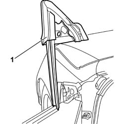

7005D33 CHANNEL OF DOOR DESCENDING GLASS INNER GUIDE (ONE) LH OR RH ON FRONT SIDE DOOR - R R
- Path
- Procedures > 70 FITTINGS > 7005 PASSENGER COMPARTMENT FRONT SIDE DOORS > 7005D FRONT SIDE DOOR WINDOW GLASSES > 7005D33 CHANNEL OF DOOR DESCENDING GLASS INNER GUIDE (ONE) LH OR RH ON FRONT SIDE DOOR - R R
- Kind
- repair procedure (removal / refitting; the operation number is the code)
- Applies to
- all engines; all production periods
- Interactive page
- https://sloeber94.github.io/elrnDB-aGt/en/#/125001785
Applies to: all engines; all production periods
 Removing
Removing
 Refitting
RefittingLower the window completely.
Op. 7005E12 CORNER COVER OF ONE FRONT SIDE DOOR, LH OR RH R R
Op. 7005R30 ELECTRICALLY CONTROLLED DOOR MIRROR (ONE) - R+R
1. Release the channel from the seat upwards.

Applies to: all engines; all production periods
Refitting
RemovingCheck the condition of the channel.
With the window completely lowered, fit the channel in the seat checking that the triangular steel element and the seal match.
Op. 7005R30 ELECTRICALLY CONTROLLED DOOR MIRROR (ONE) - R+R
Op. 7005E12 CORNER COVER OF ONE FRONT SIDE DOOR, LH OR RH R R
Topics linked from this page (2)
- 7005E12 CORNER COVER OF ONE FRONT SIDE DOOR, LH OR RH R R
- 7005R30 ELECTRICALLY CONTROLLED DOOR MIRROR (ONE) - R+R